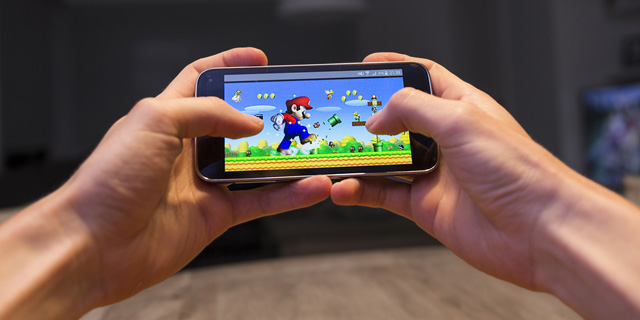
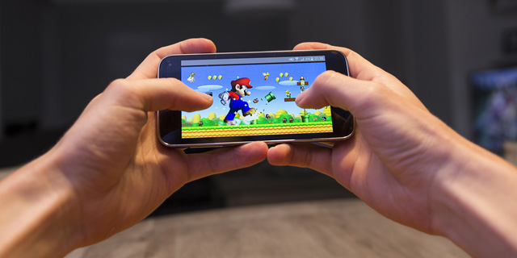

| Name | Nur Shafiqah Atirah Bt Ahmad Fidrus |
| Age | 20 years old |
| Home | Pangsapuri Cempaka,Bandar Bukit Puchong 2 |
| Date of birth | 16 November 2002 |
| Hobbies | Singing, Playing online games, Listening to Music, |
| Favorite colour | Yellow, Pink, Black |
| Favorite food | Spaghetti Bolognese, Pasta, Chicken Curry, Noodles |
| Favorite beverages | Pineapple juice, Milk, Watermelon juice |
| Nickname | Tirah, Shafi, Shaffy, Sheqah, |
As mentioned above, I do love listening to music. I do listen to ballad, pop, jazz, k-pop and many more. As for me, music can relieve my stress and it makes me calm whenever I listen to them. These are my favorite music band and groups. I listen to their songs a lot rather than anyone else's as their songs really fits my taste of music. They are Bunkface, 5 Seconds of Summer, Stray Kids, SEVENTEEN, The Boyz and many more. Most of their songs really hyped me up whenever I am bored.